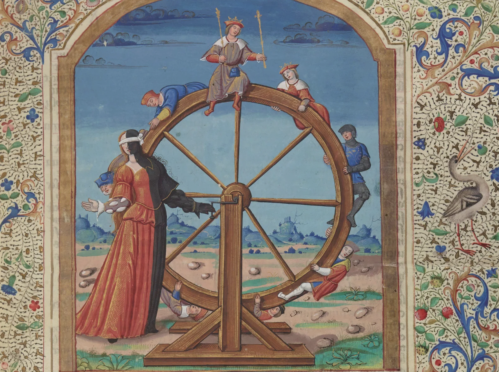
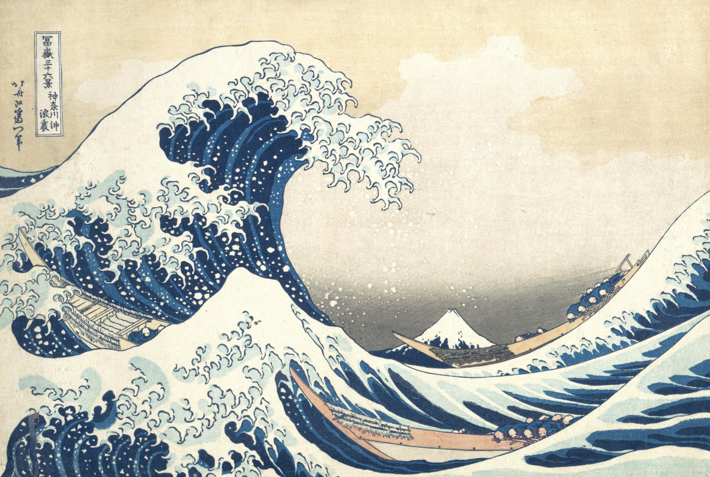
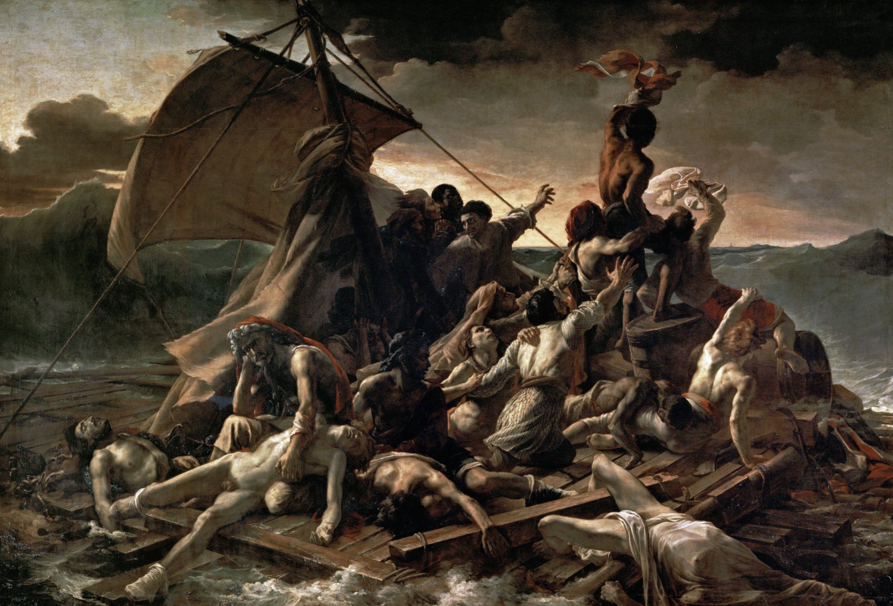
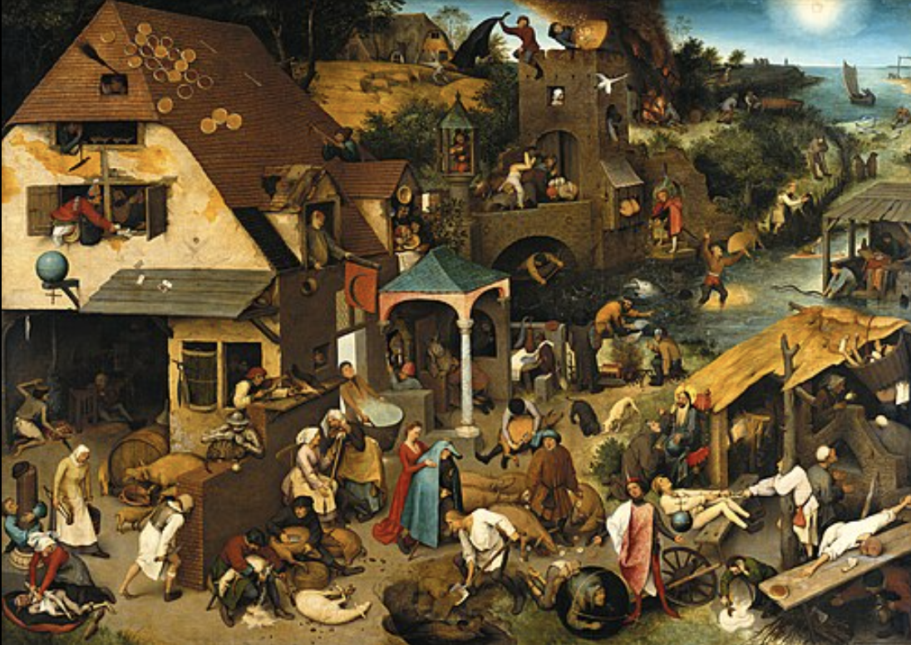
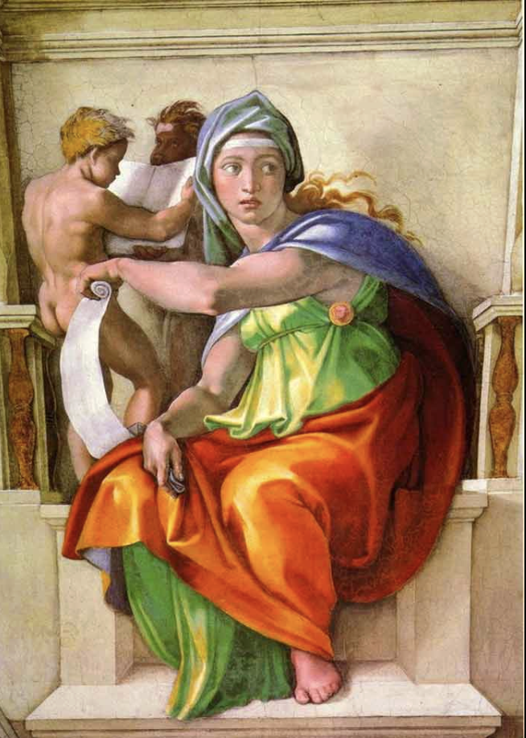

Kairox
A Religion for an Uncertain Universe
On Certainty
Every belief is a probability. Every decision, a wager placed under uncertainty.
⚄
Kairox begins with one observation: reality is not a machine. It is a probability distribution — and the history we remember is only the path it happened to take.
“
No one possesses certainty. Every belief is a probability; every decision, a wager placed under uncertainty. The wise do not ask, “Am I right?” They ask, “How likely am I to be right?”
⚄ ✦ ⚄
⚄ ✦ ⚄
Book One
The Fog
We do not live in the world. We live in our map of it.
I

J.M.W. Turner — Snow Storm, Steam-Boat off a Harbour's Mouth, 1842.
Reality does not resolve into clean lines — it churns until only the outline of the vessel remains certain. This is the fog Kairox is asked to navigate.
Reality does not resolve into clean lines — it churns until only the outline of the vessel remains certain. This is the fog Kairox is asked to navigate.
On Maps
We live inside a map of reality, never reality itself.
⚄
On History
Every present held a thousand futures before this one was chosen.
1 We live inside a map of reality, never reality itself.
2 The map is always incomplete. Information is partial; perception, biased.
3 Some days the road is visible. Some days it disappears. The task is not to clear the fog — it is to walk through it.
4 History looks inevitable only after it happens.
5 Every present held a thousand futures before this one was chosen.
6 Every victory hides a world where it failed. Every failure, a world where it did not.
7 Do not mistake the path taken for the only path that could have been.
Book Two
Fortune
Fortune is not judged. It is acknowledged.
II

Rota Fortunae — The Wheel of Fortune, 13th-century manuscript tradition.
I shall reign. I reign. I have reigned. I am without a kingdom. Fortune turns for every follower alike.
I shall reign. I reign. I have reigned. I am without a kingdom. Fortune turns for every follower alike.

Katsushika Hokusai — The Great Wave off Kanagawa, c. 1831.
The boatmen do not command the wave. They only choose how well they meet it.
The boatmen do not command the wave. They only choose how well they meet it.
On Luck
Luck decides who is standing at the door when it opens.
⚄
On Confidence
Confidence should never outrun evidence.
1 Luck is not magic. It is uncertainty, realized.
2 Talent prepares. Effort prepares. Luck decides who is standing at the door when it opens.
3 To worship luck is foolish. To deny it is also foolish.
4 Say not “this will happen.” Say “there is a seventy percent chance.”
5 Say not “he is wrong.” Say “I trust another explanation more.”
6 Ask not “can I win?” Ask what you gain if right, and what you lose if wrong.
7 Aim for the long run, not the single roll. Sometimes the wise choice loses; sometimes the foolish one wins. Judge the process, not the outcome.
Book Three
Conviction
A belief that costs nothing is not a belief. It is entertainment.
III

Théodore Géricault — The Raft of the Medusa, 1818–1819.
A belief only becomes real when someone risks something because of it.
A belief only becomes real when someone risks something because of it.

Pieter Bruegel the Elder — Netherlandish Proverbs, 1559.
A hundred small truths, unfolding at once. No single story holds the whole scene.
A hundred small truths, unfolding at once. No single story holds the whole scene.
On Conviction
A belief that costs nothing is not a belief.
⚄
On Incentives
Watch what people do. Incentive speaks before word does.
1 Money, time, reputation, comfort — conviction spends one of these, or it is not conviction.
2 Truth exists. Certainty does not.
3 To change your mind is not weakness. It is loyalty to what is real, over what is comfortable.
4 Watch what people do. Their incentives speak before their words do.
5 Simple stories are attractive, and usually wrong. Most things have many causes.
6 Seek the second explanation before you trust the first.
The Five Virtues
- Intellectual Humility — know the edge of what you know.
- Probabilistic Thinking — think in ranges, not absolutes.
- Rational Courage — act, in spite of the fog.
- Adaptability — let evidence move you.
- Long-Term Thinking — decide for decades, not for today.
The Five Sins
- Certainty.
- Dogmatism.
- Mistaking luck for skill.
- Judging a decision only by how it turned out.
- Ignoring the odds because the story feels true.
Book Four
The Long Game
Not certainty. Better navigation.
IV

Michelangelo — The Delphic Sibyl, Sistine Chapel ceiling, c. 1509.
She does not know the future. She reads its likelihood, and turns toward it anyway.
She does not know the future. She reads its likelihood, and turns toward it anyway.
On Time
Time is the one currency that never returns.
⚄
1 Before you decide: what do you know, and what do you only believe?
2 What is your downside? Could you survive it? What would change your mind?
3 Success is never fully earned. Failure is never fully deserved. Both are part luck, part labor — the wise learn to tell them apart.
4 Small gains, repeated for decades, become a difference too large to explain by any single year.
5 Time is the one currency that never returns. Spend it as if it were the only one that doesn't.
6 The purpose of a life is not certainty. It is to leave behind better judgment than the judgment you inherited.
⚄ ✦ ⚄
Not for guaranteed success — for good judgment. Not to avoid failure — to survive it, and learn.
⚄ ✦ ⚄
The Oath
Spoken before conviction, not after.
⚄
The Kairox Oath
“
I accept that certainty is an illusion.
I will trade absolutes for probabilities.
I will judge my process before my outcome.
I will stay humble before luck.
I will update when the evidence does.
I will guard my downside before I chase my upside.
I will choose truth over comfort.
I will walk the fog with courage, humility, and reason.
I will trade absolutes for probabilities.
I will judge my process before my outcome.
I will stay humble before luck.
I will update when the evidence does.
I will guard my downside before I chase my upside.
I will choose truth over comfort.
I will walk the fog with courage, humility, and reason.
The Wider Archive
Kairox does not stand apart from the Anchor. It is the fog beneath the sovereign bet.
❧
Kairox is one book within the wider record of Sovereign Anchor Holding's thinking.